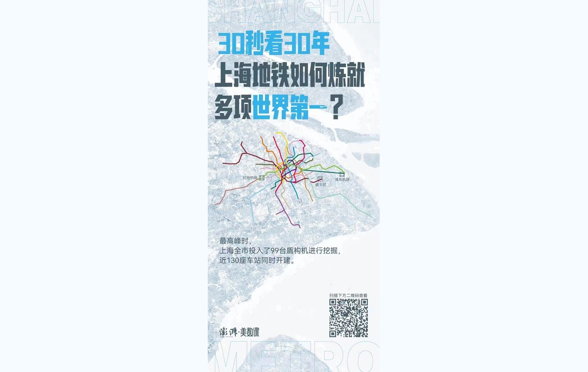

Data Journalism Internship at The Paper 839studio AKA 澎湃美数课
During the internship, I created and contributed to data visual stories on social topics, environment, education, technology, and culture.

During the internship, I created and contributed to data visual stories on social topics, environment, education, technology, and culture.
